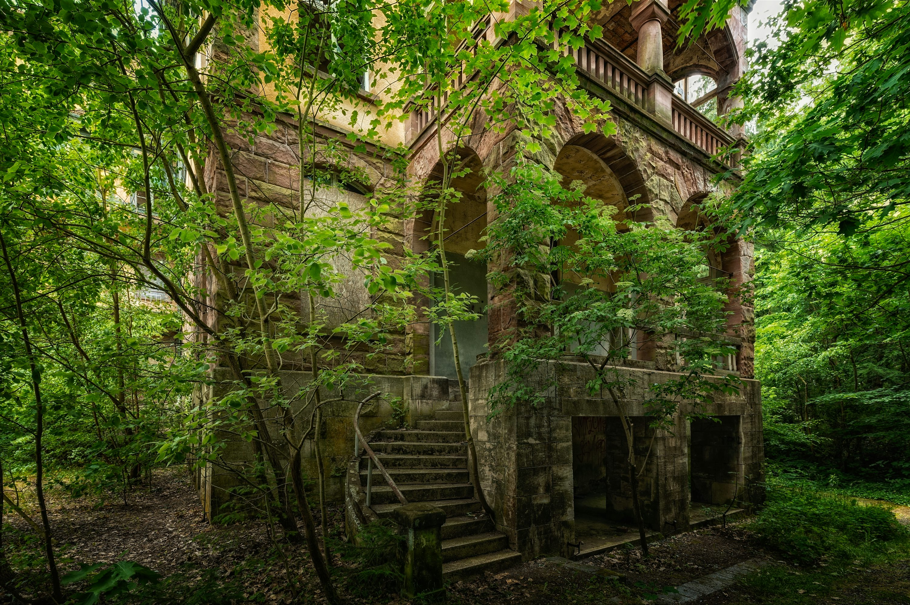
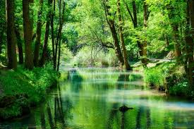
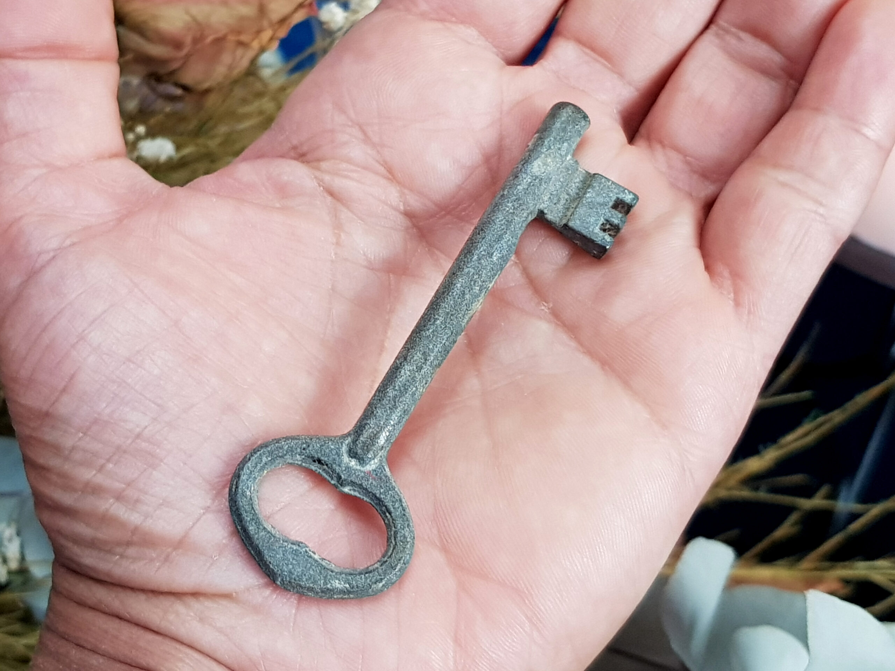
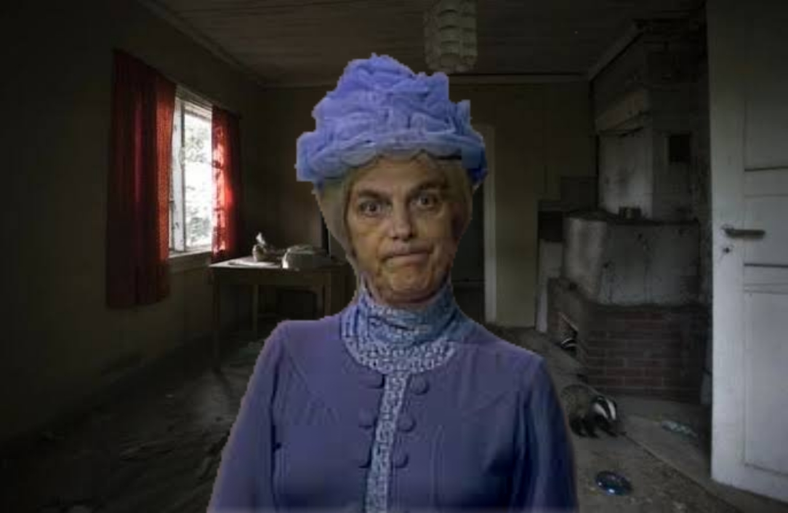
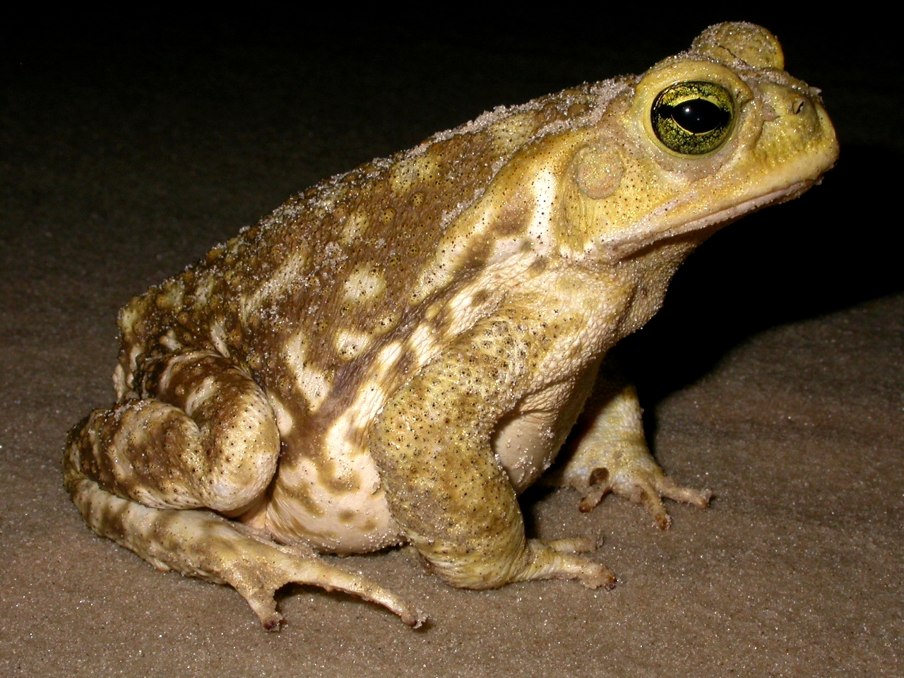
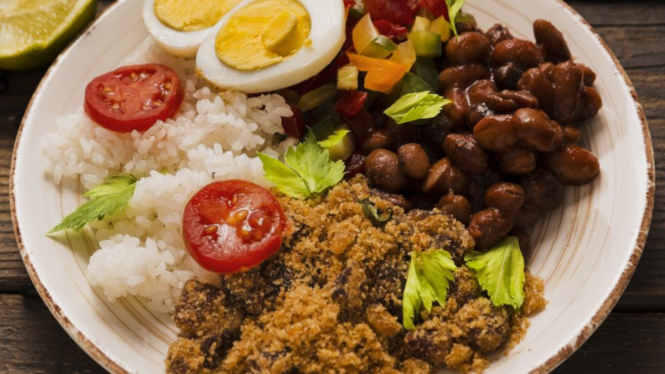

Eu estava passeando pela floresta e vi uma carta mostrando um mapa direcionando para um tesouro, fiquei curioso e decidi segui-lo, primeiro caminho leva a direita, mas devo confiar?

Viro para a direita, ando por algumas horas e encontro uma casa abandonada, ela tem uma atmosfera sombria, devo entrar nela?

tem um rio enorme pra esquerda, acho melhor ir para direita

encontrei uma chave em um arbusto que estava perto da porta da casa
A porta da casa parece estar trancada

Me deparo com uma bruxa assustadora, o que devo fazer!?

Ela se irrita e te transforma em um sapo. Final ruim.

Ela se surpreende por você ser a primeira pessoa a chama-la de senhora e te chama para um almoço. Final bom.